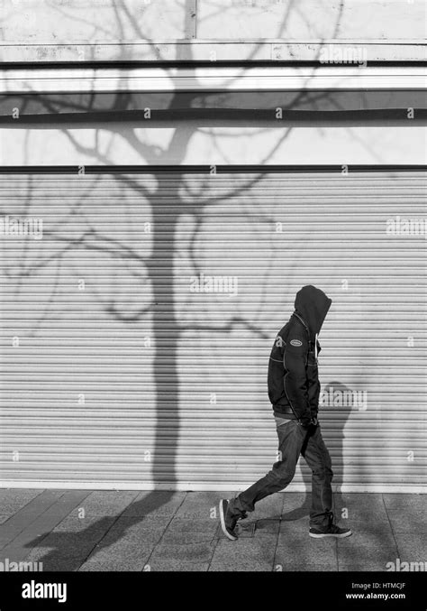

The 25-year-old LoDo resident was last seen leaving his apartment near Union Station on a Sunday evening. Denver PD has opened a formal investigation as his family grows increasingly desperate for answers.

| Age | 25 |
| Height | 6'1" |
| Weight | ~185 lbs |
| Hair | Dark brown, short |
| Eyes | Hazel |
| Last seen | April 25, 2026, ~9:40 PM |
| Location | Wazee St & 17th St, Denver |
| Wearing | Grey hoodie, dark jeans, white sneakers |
Marcus Dellwood left his apartment near the intersection of Market Street and 19th Street at approximately 9:40 PM on Saturday, April 25th, according to building security footage reviewed by Denver Police. He was not carrying luggage and left his wallet, keys, and phone charger behind — details his family says are deeply out of character.
"He texted me at 9:30 that night saying he was going for a walk to clear his head," said his sister, Renata Dellwood, 31, speaking from her home in Aurora. "That was the last anyone heard from him. His phone went dark forty minutes later, somewhere near Union Station."
Dellwood works as a SOC Analyst 2 at Prungl, a cybersecurity startup in the Boulder area, and has lived in the LoDo neighborhood for three years. Friends describe him as sociable and dependable, with no history of mental health crises or substance abuse. His last known social media activity was a post on April 18th.
Denver Police Department spokesperson Lt. Camille Rourke confirmed Friday that Dellwood's case has been escalated from a voluntary missing adult report to a formal investigation. "We are actively pursuing several leads and have reviewed available surveillance footage in the area," Rourke said in a statement. "We are asking anyone who may have been near the Market Street and 19th Street corridor on the evening of April 25th to come forward."
A search organized by Dellwood's friends covered Confluence Park, the South Platte River trail, and the neighborhood surrounding Wazee and 17th on the weekend of June 1st. Approximately 40 volunteers participated. The search yielded no confirmed sightings.
Renata Dellwood says the family has hired a private investigator and is offering a $2,000 reward for information leading to Marcus's whereabouts. "We just want to know he's safe," she said, her voice breaking. "That's all. We just need to know."
Anyone with information about Marcus Dellwood is urged to contact the Denver Police Department's missing persons unit at (720) 555-0198 or submit an anonymous tip through the department's online portal. A community flyer distribution effort is planned for the Union Station and Riverfront Park areas on Saturday, June 7th.